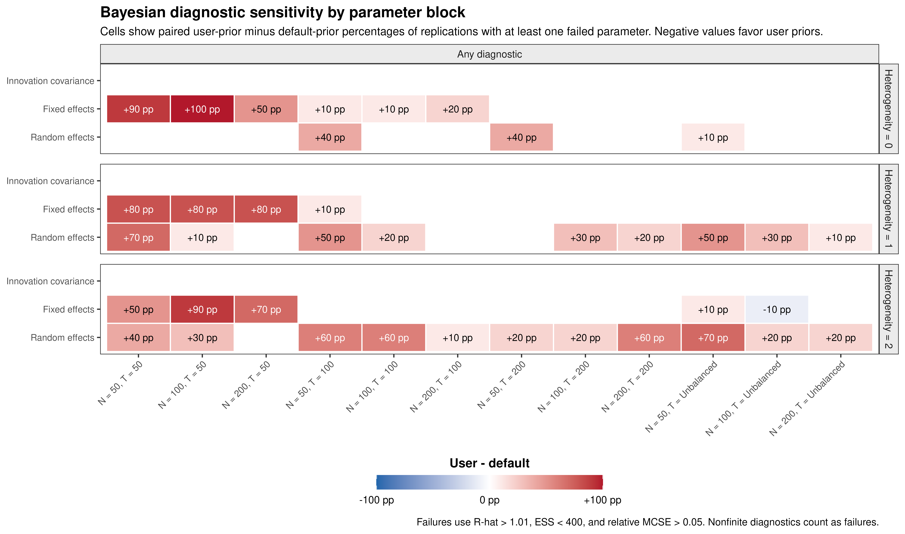
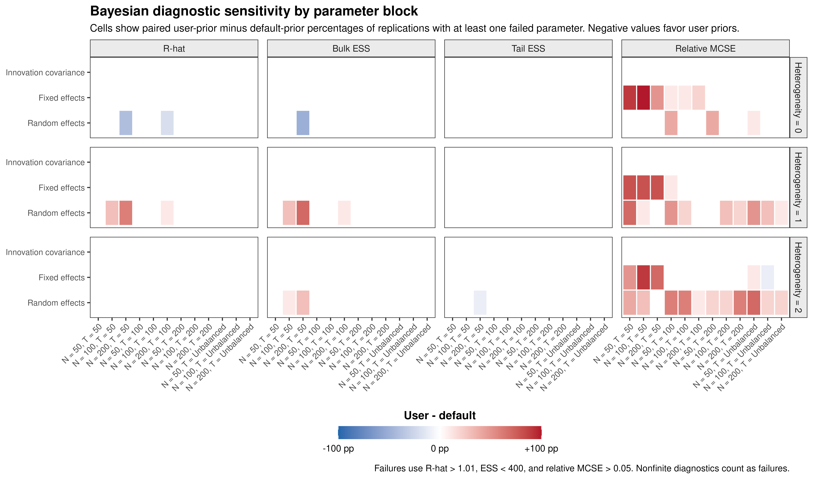
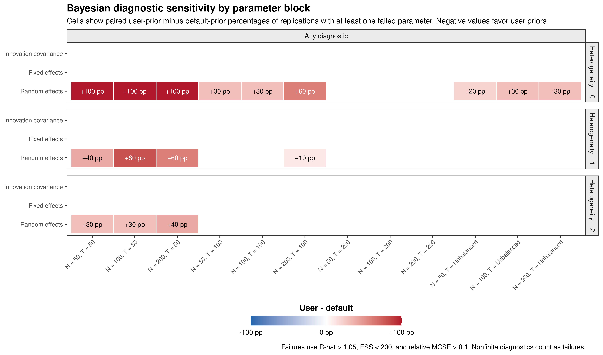

Bayesian (Mplus) Diagnostics
Ivan Jacob Agaloos Pesigan
Source:vignettes/mplus-diagnostics.Rmd
mplus-diagnostics.RmdOverview
The Bayesian simulation conditions were estimated in Mplus using the default prior specification and the user-specified prior specification. The figures below summarize convergence and Monte Carlo performance across all simulation task IDs.
For the primary summaries, a replication is classified as having a diagnostic failure within a parameter block when at least one parameter in that block fails the requested criterion. The three parameter blocks are the innovation covariance parameters, fixed effects, and random effects. This block-level summary is more compact than displaying every parameter in the main figure.
The default diagnostic thresholds are R-hat greater than 1.01, bulk or tail effective sample size less than 400, and relative Monte Carlo standard error greater than 0.05. Nonfinite diagnostics are classified as failures.
Overall diagnostic failure rates
Prior sensitivity
The following figure reports the paired difference in failure rates:
Negative values indicate fewer failures under the user-specified priors, whereas positive values indicate more failures.

Simulation-case sensitivity table
The block-level figure emphasizes broad patterns. The following table retains each simulation case separately and reports the paired user-prior minus default-prior difference in the percentage of replications with at least one failed parameter in each block. Positive values indicate more failures under the user-specified priors, whereas negative values indicate fewer failures.
| Task ID | Heterogeneity | N | T | Innovation covariance | Fixed effects | Random effects |
|---|---|---|---|---|---|---|
| 1 | 1 | 50 | 50 | 0 pp | +80 pp | +70 pp |
| 2 | 1 | 100 | 50 | 0 pp | +80 pp | +10 pp |
| 3 | 1 | 200 | 50 | 0 pp | +80 pp | 0 pp |
| 4 | 1 | 50 | 100 | 0 pp | +10 pp | +50 pp |
| 5 | 1 | 100 | 100 | 0 pp | 0 pp | +20 pp |
| 6 | 1 | 200 | 100 | 0 pp | 0 pp | 0 pp |
| 7 | 1 | 50 | 200 | 0 pp | 0 pp | 0 pp |
| 8 | 1 | 100 | 200 | 0 pp | 0 pp | +30 pp |
| 9 | 1 | 200 | 200 | 0 pp | 0 pp | +20 pp |
| 10 | 1 | 50 | Unbalanced | 0 pp | 0 pp | +50 pp |
| 11 | 1 | 100 | Unbalanced | 0 pp | 0 pp | +30 pp |
| 12 | 1 | 200 | Unbalanced | 0 pp | 0 pp | +10 pp |
| 13 | 2 | 50 | 50 | 0 pp | +50 pp | +40 pp |
| 14 | 2 | 100 | 50 | 0 pp | +90 pp | +30 pp |
| 15 | 2 | 200 | 50 | 0 pp | +70 pp | 0 pp |
| 16 | 2 | 50 | 100 | 0 pp | 0 pp | +60 pp |
| 17 | 2 | 100 | 100 | 0 pp | 0 pp | +60 pp |
| 18 | 2 | 200 | 100 | 0 pp | 0 pp | +10 pp |
| 19 | 2 | 50 | 200 | 0 pp | 0 pp | +20 pp |
| 20 | 2 | 100 | 200 | 0 pp | 0 pp | +20 pp |
| 21 | 2 | 200 | 200 | 0 pp | 0 pp | +60 pp |
| 22 | 2 | 50 | Unbalanced | 0 pp | +10 pp | +70 pp |
| 23 | 2 | 100 | Unbalanced | 0 pp | -10 pp | +20 pp |
| 24 | 2 | 200 | Unbalanced | 0 pp | 0 pp | +20 pp |
| 25 | 0 | 50 | 50 | 0 pp | +90 pp | 0 pp |
| 26 | 0 | 100 | 50 | 0 pp | +100 pp | 0 pp |
| 27 | 0 | 200 | 50 | 0 pp | +50 pp | 0 pp |
| 28 | 0 | 50 | 100 | 0 pp | +10 pp | +40 pp |
| 29 | 0 | 100 | 100 | 0 pp | +10 pp | 0 pp |
| 30 | 0 | 200 | 100 | 0 pp | +20 pp | 0 pp |
| 31 | 0 | 50 | 200 | 0 pp | 0 pp | +40 pp |
| 32 | 0 | 100 | 200 | 0 pp | 0 pp | 0 pp |
| 33 | 0 | 200 | 200 | 0 pp | 0 pp | 0 pp |
| 34 | 0 | 50 | Unbalanced | 0 pp | 0 pp | +10 pp |
| 35 | 0 | 100 | Unbalanced | 0 pp | 0 pp | 0 pp |
| 36 | 0 | 200 | Unbalanced | 0 pp | 0 pp | 0 pp |
Sources of diagnostic failure
The next figure separates failures attributable to R-hat, bulk effective sample size, tail effective sample size, and relative Monte Carlo standard error. Cell labels are omitted to emphasize the overall pattern.

Alternative diagnostic thresholds
A compact threshold-sensitivity analysis can be produced by changing the criteria while retaining the same block-level summary. The example below uses R-hat greater than 1.05, effective sample size less than 200, and relative Monte Carlo standard error greater than 0.10.

Parameter-level follow-up figures
The block-level overview is intended for the manuscript or response to reviewers. Parameter-level heatmaps can be used as supplementary drill-down figures when a block shows meaningful diagnostic sensitivity. To keep these figures legible, display one parameter family at a time and omit cell labels.
fixed_effect_parameters <- c(
"mean(beta[1,1])",
"mean(beta[2,1])",
"mean(beta[1,2])",
"mean(beta[2,2])",
"mean(mu[1,1])",
"mean(mu[2,1])"
)
FigMplusDiagnosticsHeatmap(
diagnostics = diagnostics,
metric_name = "failure_rate",
comparison = "difference",
diagnostic = "Any diagnostic",
parm = fixed_effect_parameters,
values = FALSE
)Raw R-hat, effective sample size, and Monte Carlo standard-error differences are generally less interpretable as primary figures because they use very different numerical scales. Threshold-based failure rates provide a common and directly interpretable sensitivity metric. The continuous diagnostics can still be inspected for selected parameters when needed.
Extracting plotted summaries
Each figure retains the values used to construct the heatmap. These summaries can be used for manuscript tables or reviewer-response text.
#> taskid method n time heterogeneity target diagnostic
#> 1 1 Priors - Default 50 50 1 FE Any diagnostic
#> 2 1 Priors - Default 50 50 1 Innovation Any diagnostic
#> 3 1 Priors - Default 50 50 1 RE Any diagnostic
#> 4 2 Priors - Default 100 50 1 FE Any diagnostic
#> 5 2 Priors - Default 100 50 1 Innovation Any diagnostic
#> 6 2 Priors - Default 100 50 1 RE Any diagnostic
#> value n_valid comparison unit condition_label heterogeneity_label
#> 1 0.8 10 difference replication N = 50, T = 50 Heterogeneity = 1
#> 2 0.0 10 difference replication N = 50, T = 50 Heterogeneity = 1
#> 3 0.7 10 difference replication N = 50, T = 50 Heterogeneity = 1
#> 4 0.8 10 difference replication N = 100, T = 50 Heterogeneity = 1
#> 5 0.0 10 difference replication N = 100, T = 50 Heterogeneity = 1
#> 6 0.1 10 difference replication N = 100, T = 50 Heterogeneity = 1
#> target_label diagnostic_panel fill_value value_label text_colour
#> 1 Fixed effects Any diagnostic 0.8 +80 pp white
#> 2 Innovation covariance Any diagnostic 0.0 <NA> black
#> 3 Random effects Any diagnostic 0.7 +70 pp white
#> 4 Fixed effects Any diagnostic 0.8 +80 pp white
#> 5 Innovation covariance Any diagnostic 0.0 <NA> black
#> 6 Random effects Any diagnostic 0.1 +10 pp black